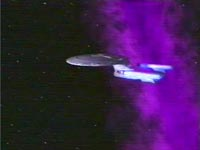
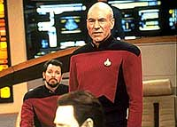
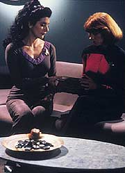
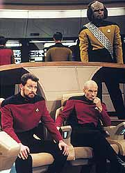
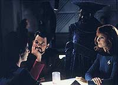
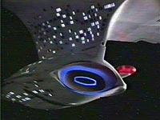

|
MANCHETE
DO EPISÓDIO
Deanna
Troi perde poderes empáticos
e sem eles tem sua carreira ameaçada
Episódio
anterior | Próximo
episódio
Sinopse:
Data Estelar: 44359.9.
Deanna Troi subitamente descobre que seus poderes empáticos
simplesmente desapareceram, e desiste da função de conselheira da
nave.
 Enquanto
isso, a Enterprise encontra um fenômeno que está arrastando a nave
para sua destruição, rumo aos restos de uma
"supercorda". Data especula que o fenômeno que está
gerando os grávitons que estão arrastando a Enterprise são
criaturas que vivem em duas dimensões.
Com a ajuda de Troi, eles criam um plano para iludir as criaturas,
fazendo com que mudem sua direção durante tempo suficiente para
que a Enterprise possa escapar. O plano funciona e as criaturas
acabam indo parar nos restos da supercorda.
Com o desaparecimento dos seres, os poderes empáticos de Deanna
Troi voltam e ela reassume suas funções como conselheira.
Comentários:
 "The
Loss" arruma uma desculpa pseudo-científica para retirar
os poderes empáticos de Deanna Troi, em uma tentativa de
desenvolver melhor a conselheira da Enterprise. Por um lado, pode-se
dizer que o episódio conseguiu de fato trazer um novo insight sobre
a personagem. Por outro, a verdade é que poderia ter sido tão
melhor.
 A
história repete a mesma mensagem o tempo todo --Troi sem sua
empatia é como uma pessoa que perdeu um dos tradicionais cinco
sentidos, ou seja, uma deficiente física. A idéia é extremamente
coerente, mas diz muito mais sobre a espécie da conselheira --betazóide--
do que dela própria.
A porção mais divertida da história é ver a conselheira perdida
em seu próprio ambiente de trabalho. Normalmente, Troi chega a ser
irritante com sua arrogância empática, sempre capaz de antecipar
as sensações das pessoas com quem está falando.
 Por
isso, é um colírio para os olhos vê-la totalmente perdida com uma
tripulante que vem em busca de aconselhamento. Troi nos mostra
claramente que ela como terapeuta é uma ótima empata. Parece que
os instrumentos teóricos que ela aprendeu na escola de psicologia são
totalmente inúteis se ela não tiver a empatia como apoio para a análise.
No fim das contas, o que era para ser um episódio para fortalecer a
personagem --em geral tão mal-tratado pelos roteiros de A Nova
Geração-- acabou enfraquecendo-a, por mostrar a ausência de
qualidades e dependência da empatia.
 O
resultado só não foi pior porque Troi conseguiu superar suas
dificuldades e auxiliar Data a elaborar um plano para salvar a nave
da corrente de grávitons gerada pelos seres bidimensionais que
estava levando a nave para sua destruição, em um fenômeno
definido como uma "supercorda".
A parte "falsa-encrenca" da história se superou no
quesito tecnobaboseira. A idéia de seres bidimensionais é, por si
só, muito interessante (nós mesmos somos seres tridimensionais em
um ambiente quadridimensional!), mas somada à história da
"supercorda" (a teoria das supercordas postula que todo o
Universo é composto na verdade por super-cordas distribuídas em um
mundo de dez dimensões, das quais apenas podemos perceber quatro,
como vibrações das cordas decadimensionais), a coisa toda ficou
muito confusa e sem sentido.
Um bom exemplo do emprego adequado da idéia de seres bidimensionais
está no clássico livro "Flatland", de Edwin Abbott.
Nele, Abbott conta a história de polígonos que vivem em um plano,
até que um deles descobre que existe uma terceira dimensão. O
impacto da descoberta pode ser comparado à constatação de Albert
Einstein de que o tempo não passa de uma quarta dimensão, somadas
às três (largura, altura e profundidade) para as quais estamos
equipados para perceber.
 Como
nota de rodapé, vale mencionar o bom uso que os roteiristas
conseguem com a personagem Guinan. Mais uma vez, ela fala pouco, mas
fala bem. Também merecem destaque as tomadas da Enterprise, mais
eficientes e belas do que nunca.
Citações:
Riker - "What?
No seconds?"
("O quê? Sem os segundos?")
Data - "I have discovered, sir, a certain level of
impatience when I calculate a lengthy time interval to the nearest
second. However, if you wish..."
("Eu descobri, senhor, um certo nível de impaciência quando
calculo um logo intervalo de tempo até os segundos. Entretanto, se
o senhor quiser...")
Troi - "With all due respect, captain. You don't know what
you are talking about."
("Com todo respeito, capitão. Você não sabe do que está
falando.")
Trivia:
 Aqui aprendemos que as habilidades empáticas dos Betazóides
encontram-se no cerebelo e no córtex cerebral. Também descobrimos
que os Breens e Ferengis não podem ser sentidos pelos Betazóides.
Aqui aprendemos que as habilidades empáticas dos Betazóides
encontram-se no cerebelo e no córtex cerebral. Também descobrimos
que os Breens e Ferengis não podem ser sentidos pelos Betazóides.
A
atriz Kim Branden, que aqui interpreta a alferes Janet Brooks, fez o
papel da esposa de Picard no filme para cinema "Jornada nas
Estrelas - Generations".
Ficha
técnica:
História de Hilary J. Bader
Roteiro de Hilary J. Bader, Alan J. Adler e Vanessa Greene
Direção de Chip Chalmers
Exibido em 31/12/1990
Produção: 084
Elenco:
Patrick Stewart como
Jean-Luc Picard
Jonathan Frakes como William Thomas Riker
Brent Spiner como Data
LeVar Burton como Geordi La Forge
Michael Dorn como Worf
Gates McFadden como Beverly Crusher
Marina Sirtis como Deanna Troi
Elenco convidado:
Whoopi Goldberg
como Guinan
Kim Branden como alferes Brooks
Mary Kohnert como alferes Tess Allenby
Episódio
anterior | Próximo
episódio
|